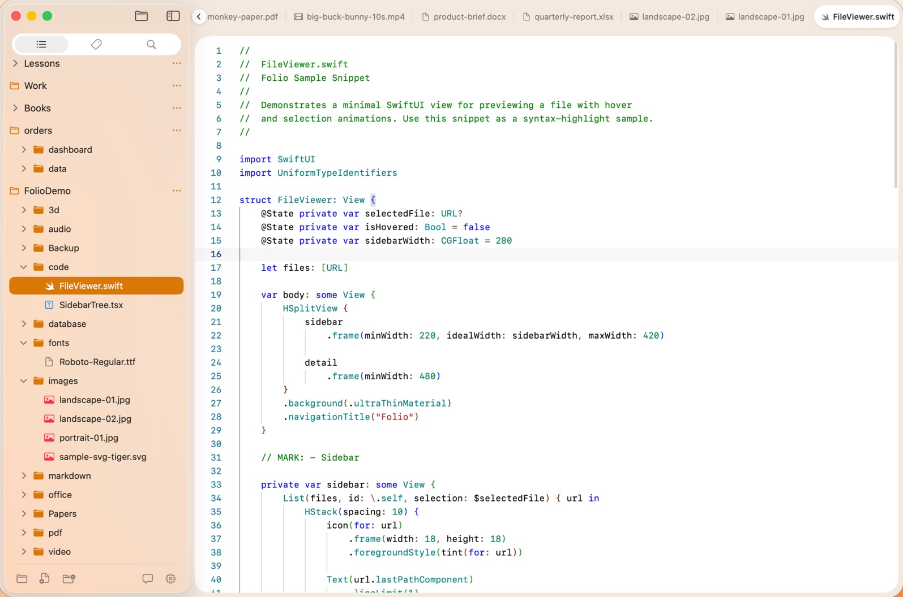
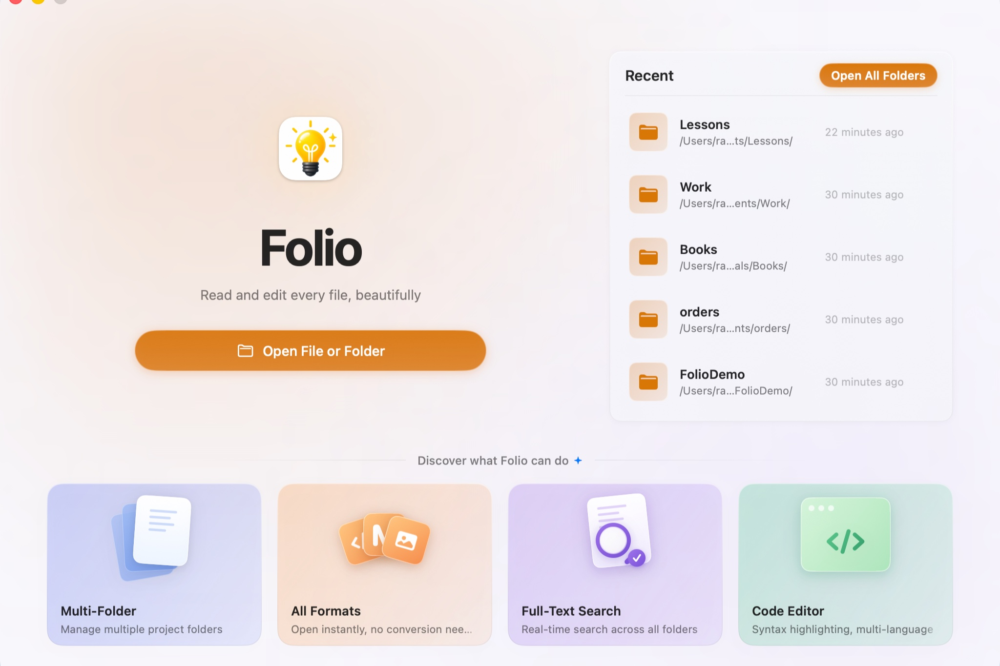

Elegant code reading,fully yours.


Turn your Mac into one quiet, focused workspace.
Stop jumping between a dozen apps.
每个项目一个标签页。一键切换，回到上次离开的地方——文件夹、滚动位置、上次打开的文件，都还在那里。
一个 app 顶替十几个。文档、表格、演示稿、PDF、笔记、图片、音乐、视频——直接打开就能看。
搜的不只是文件名。笔记里的一句话、表格里的一个数字都能直接命中——跨所有打开的工作空间。
像阅读发表后的文章一样写作。无需分屏预览，所写即所见。
每一个细节，都为了让你在文件之间穿梭得更安静、更专注。
每个工作空间记得你的滚动位置和上次打开的文件。
按内容搜索，不止文件名。笔记里的一句话也能瞬间命中。
几个项目同时挂着，左边一棵清晰的文件树。
与系统美学一脉相承的优雅界面。
三维模型可以转着看，字体可以一目了然地试。
电子表格与数据表直接查看、排序、筛选。
几乎你能想到的编程语言都已经准备好。
一键把笔记切换成另一种语言，离线快速。
透明标题栏、阅读宽度可调，让文字成为主角。
两个版本用同一套方式阅读、编辑和搜索每个文件。Folio Pro 再加上那些必须走出 App Store 沙盒才能做到的工具。
看见每个文件。
所有格式一个窗口打开，Markdown、代码与笔记可编辑，全文搜索，15 套主题。沙盒运行，由 App Store 自动更新。
看见之后，直接动手。
包含 Folio 的全部能力，外加能跑 AI 智能体的终端、完整 Git、本地模型与语言服务。
Folio Pro 包含 Folio 的全部，再加上只有走出 App Store 沙盒才能做到的事：能跑 AI 智能体的终端、真正的 Git，以及在你 Mac 上运行的本地模型。
在要修改的文件旁边，直接运行 Claude Code、Codex 等命令行工具。
打开的每个仓库都能看提交历史、Diff 与 Blame。
在侧栏里提问，任何文档都能一键总结。
语义搜索、离线翻译与 OCR，在你的 Mac 上运行。
通过 LSP 为 Go、Rust、Python、TS/JS、Java 提供代码智能。
任务放在工作旁边，与菜单栏日历联动。
PDF 转成 Markdown，或保留排版直接翻译。
支持 iCloud 同步，以及更多翻译引擎。
要终端、Git 与本地 AI，选 Folio Pro；只想日常查看和编辑，选 App Store 版 Folio。两个版本目前都免费。
| FolioMac App Store | Folio Pro直接下载 | |
|---|---|---|
| 核心能力 | ||
| 打开所有格式：文档、表格、演示稿、PDF、图片、音乐与视频 | 包含 | 包含 |
| Markdown、代码与笔记编辑 | 包含 | 包含 |
| PDF 工具箱 | 包含 | 包含 |
| 跨工作空间全文搜索 | 包含 | 包含 |
| 自动备份与历史版本 | 包含 | 包含 |
| 15 套主题，深浅自动 | 包含 | 包含 |
| 翻译 | Apple 系统翻译 | + 本地模型与更多引擎 |
| Pro 工具 | ||
| 终端与 AI 标签页（Claude Code、Codex…） | 不包含 | 包含 |
| Git：提交历史、Diff、Blame | 不包含 | 包含 |
| 侧栏提问与文档总结 | 不包含 | 包含 |
| 本地模型：语义搜索、OCR | 不包含 | 包含 |
| 语言服务（LSP） | 不包含 | 包含 |
| 任务，与菜单栏日历联动 | 不包含 | 包含 |
| PDF 转 Markdown、保留排版的 PDF 翻译 | 不包含 | 包含 |
| iCloud 同步 | 不包含 | 包含 |
| 获取方式 | ||
| 分发 | App Store · 沙盒 | 直接下载 |
| 系统要求 | macOS 15+ | macOS 15+ · Apple 芯片 |
| 价格 | 目前免费 | 目前免费 |
Folio 是一款 Mac 文件浏览器。一个应用里就能打开文档、表格、演示稿、PDF、笔记、代码、图片、音乐和视频——把你日常要切换的十几个 app 收纳进一个安静、专注的窗口。
系统自带的预览只能「看一眼就关」。Folio 是为长时间停留打造的工作空间：多标签、跨文件搜索、双向编辑笔记、15 套阅读主题——把「打开一下就走」变成「打开就能开始工作」。
可以。笔记和代码完全可编辑。Office 文档与 PDF 目前是高保真预览，下一版本会开放标注与表单填写。
Folio 支持 macOS 15 及以上版本。Folio Pro 内置本地模型，需要 Apple 芯片（M 系列）的 Mac。
Folio 在你打开文件夹时就悄悄准备好，之后只在文件变化时跟进。一万个文件的大文件夹，输入即可命中——你不会感觉到它在工作。
所有处理都在你的电脑上完成。Folio 不会把你的文件内容上传到任何地方——这是默认行为，没有「关闭云同步」的开关。
Folio 与 Folio Pro 目前都完全免费。将来如果调整定价，会提前公布，早期用户会获得忠诚度优惠。
Folio 来自 Mac App Store，运行在沙盒里，专注日常的文件查看与编辑。Folio Pro 是直接下载的版本，不受沙盒限制，因此多了内置终端与 AI 标签页、完整 Git、本地模型、语言服务、任务和 iCloud 同步。两者共用同一套文件阅读体验；它们会注册相同的 Quick Look 与 Safari 扩展，同一台 Mac 上请只安装其中一个。
让你的 Mac 安静下来。一个窗口，看完所有文件。
两个版本目前都免费 · Windows 即将到来